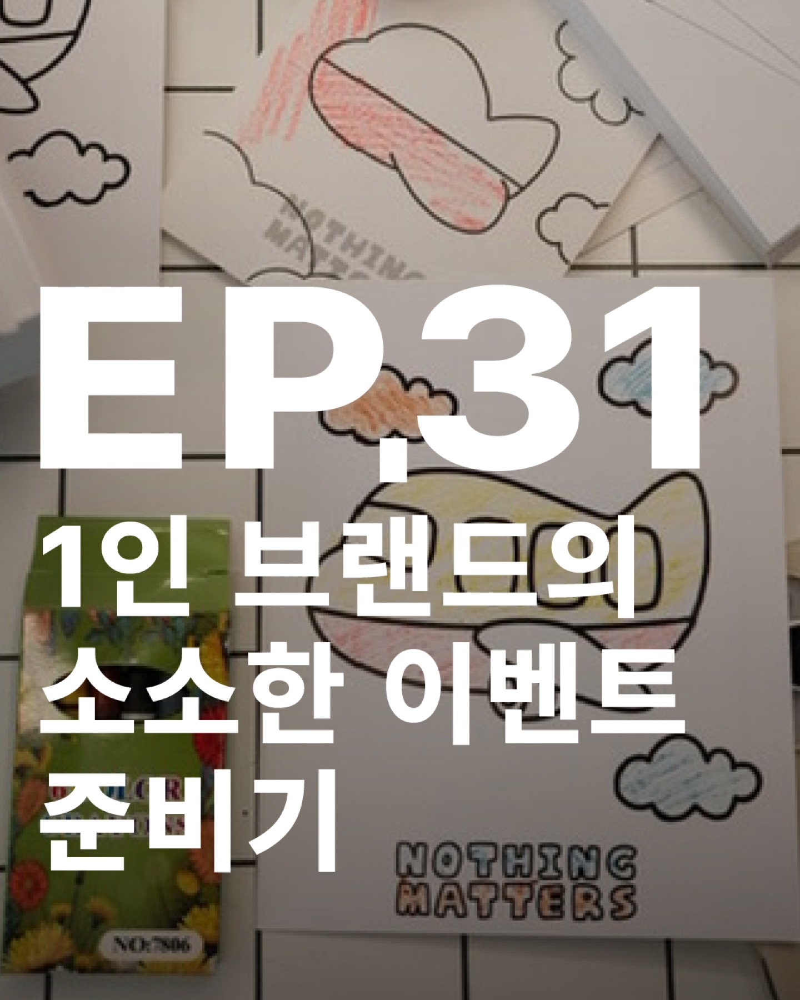
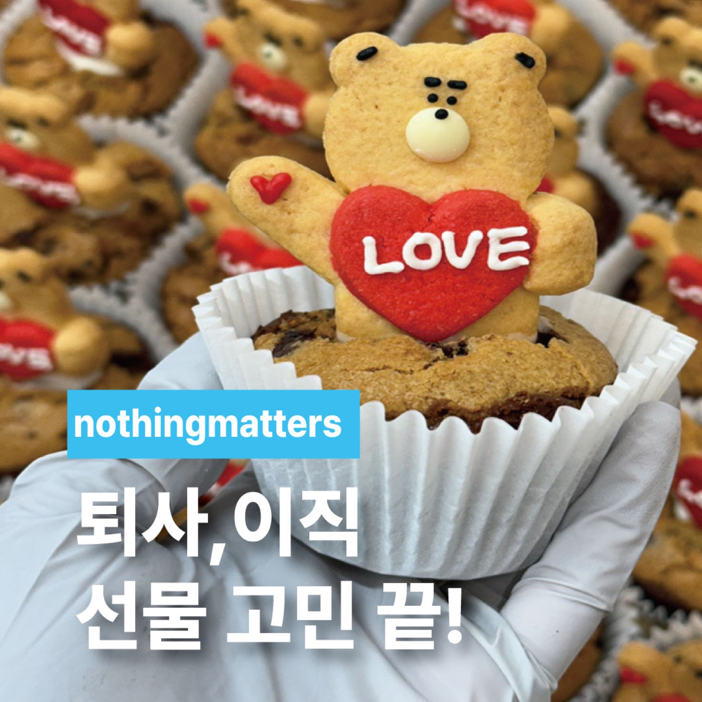
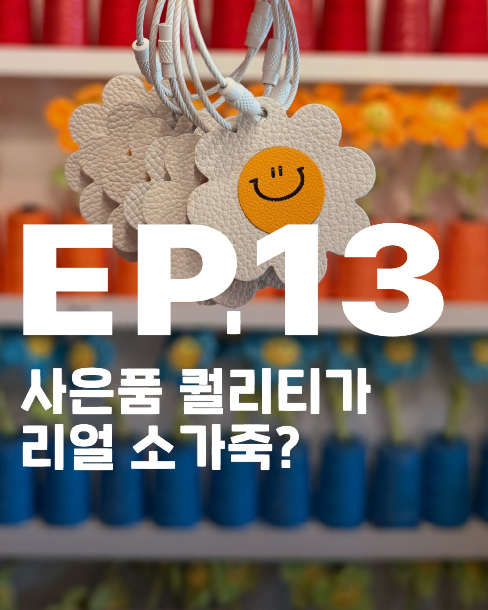
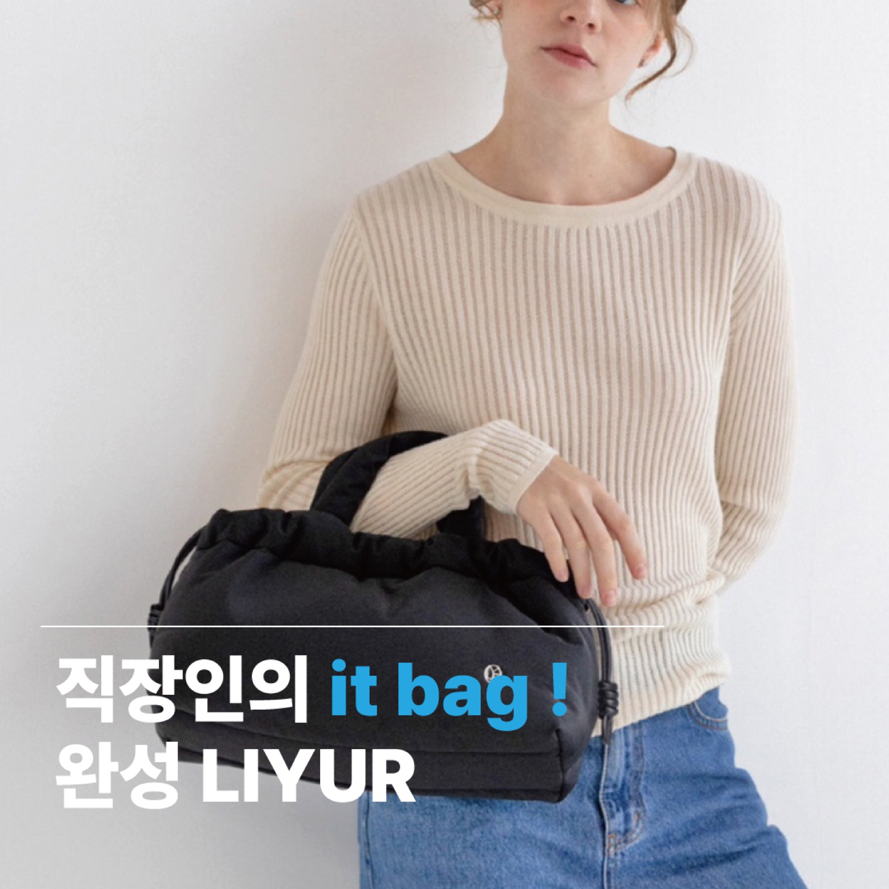

퇴사 · 승진 · 육아휴직 답례 흐름
퇴사답례품, 승진답례품, 육아휴직답례품처럼 짧은 문구와 기념 포인트가 중요하면 이 가이드가 가장 잘 맞아요.
퇴사 · 승진 가이드 보기커스텀형 브라우니쿠키는 기본 답례보다 한 걸음 더 들어가 이름, 짧은 문구, 스티커 같은 기념 포인트를 더하고 싶을 때 잘 맞는 라인이에요. 생일, 어린이 선물, 기념일, 소규모 행사처럼 의미를 조금 더 또렷하게 남기고 싶은 주문에 추천드려요.

커스텀형 브라우니는 문구가 필요한 장면에 특히 강해서, 퇴사 · 승진 답례나 웨딩 문구형 흐름처럼 목적이 분명할수록 가이드에서 먼저 보면 더 빨라요.
퇴사답례품, 승진답례품, 육아휴직답례품처럼 짧은 문구와 기념 포인트가 중요하면 이 가이드가 가장 잘 맞아요.
퇴사 · 승진 가이드 보기웨딩답례품쿠키, 결혼답례품선물처럼 이름이나 짧은 문구를 넣고 싶은 답례는 웨딩 가이드에서 먼저 흐름을 볼 수 있어요.
결혼식 답례 가이드 보기그냥 예쁜 쿠키보다, 누가 봐도 이번 주문의 이유가 느껴져야 할 때 선택하기 좋은 구조예요. 기본 브라우니의 안정감은 살리고 기념 포인트만 더할 수 있습니다.
이름, 축하 메시지, 짧은 문장처럼 주문 이유가 보이는 포인트가 필요할 때 가장 먼저 보기 좋은 라인이에요.
생일, 어린이집 선물, 기념일 쿠키처럼 작은 디테일이 인상을 바꾸는 주문에 특히 잘 어울립니다.
답례품처럼 무난한 흐름보다, “이번 주문은 조금 더 특별해야 한다”는 목적이 있을 때 훨씬 자연스럽게 선택됩니다.
브라우니 자체는 익숙하지만, 문구와 무드가 더해지면 선물의 이유가 훨씬 분명하게 보여요.



기본형보다 이유가 더 보여야 하고, 누군가를 위해 준비한 느낌이 조금 더 강해야 할 때 가장 선택하기 쉬운 편입니다.
커스텀형 브라우니쿠키는 퇴사답례품, 퇴사선물쿠키, 육아휴직답례품, 승진답례품, 인턴퇴사선물, 회사퇴사선물처럼 짧은 문구와 기념 포인트가 필요한 주문에서 특히 많이 찾는 흐름이에요.
퇴사답례품, 퇴사선물쿠키, 인턴퇴사선물처럼 짧은 감사 인사를 담고 싶은 주문이라면 커스텀형 브라우니가 가장 자연스러워요.
육아휴직답례품, 승진답례품, 감사선물처럼 기념 이유가 분명한 주문은 하트 문구나 스티커 포인트를 넣는 커스텀형이 잘 맞아요.
최소 수량, 문구 반영 여부, 기본 브라우니와 어떤 차이가 있는지처럼 가장 먼저 확인하시는 질문만 모아두었어요.